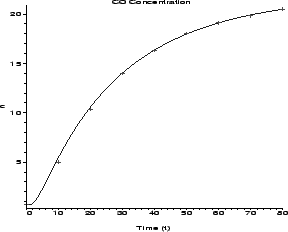
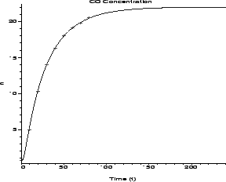
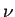
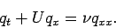
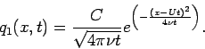
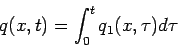
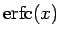
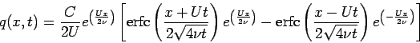
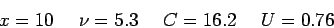

The following is a true story. My neighbor, Mrs. X [not her
real name, of course], approached me for some help in a lawsuit
which she had brought against her former employers. She had
suffered serious health problems and attributed them to a faulty
furnace at her former place of employment. The furnace had cracked and was
leaking carbon monoxide (CO) into the building. Continual exposure to
carbon monoxide can cause a wide variety of health problems. An
environmental consulting firm hired by the defendants measured the
extent of the leak in the following way. They turned off the furnace
and allowed the building to vent for many hours.
|
  |
There are a lot of unknowns in this problem, but fortunately for us, the problem is not very sensative to these parameters. The mixing of the carbon monoxide smooths out the solution over time, so that many different models will probably capture the large-time behavior. Among the parameters that one would like to have are the rate of leakage into the duct q, the length of the duct from the furnace to the outlet where the concentrations are measured x, a diffusion coefficient

, and the air flow speed in the duct U.
This dynamic problem is similar to the steady-state problem you solved
in Problem Set # 4. However, in this case, the system has not
reached any kind of steady state. In fact, the big question is
whether or not the system has reached steady state at the time of the
final measurement. If we model a diffusive problem with a drift
velocity U, we obtain




. Others might consider discretizing the integral as a Riemann sum. Either will work just fine. If you follow the analytical route, you will find that
The next step is to find or guess good values for x, U, C and
. For the purposes of this problem, I just attempted trial and
error. I chose an arbitrary duct length x=10 (m) because I did not
think this would matter so much.
The value of C merely scales the solution, so I tinkered
with and U until the shape looked close, and then I
rescaled to fit the data. I also assumed a small uniform background
level of 0.7 which is the measurement at t=0. In the end, I found that

To make sense out of the second data set, I assumed that the room had not been completely vented before the second trial. Thus, I shifted time as if the furnace had already been running a little while.
Small uniform fluctuations would not impact the model fit because I did not fit it based on a small number of data points. If your fit depends upon a large number of data points, it will be less sensative to random fluctuations. If you fit to a small number of data points, you will find that your solution is sensative to fluctuations in the points you chose to use.